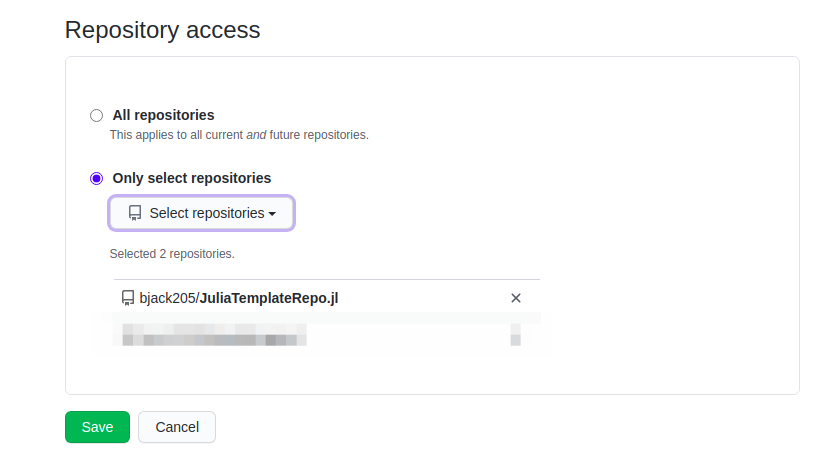
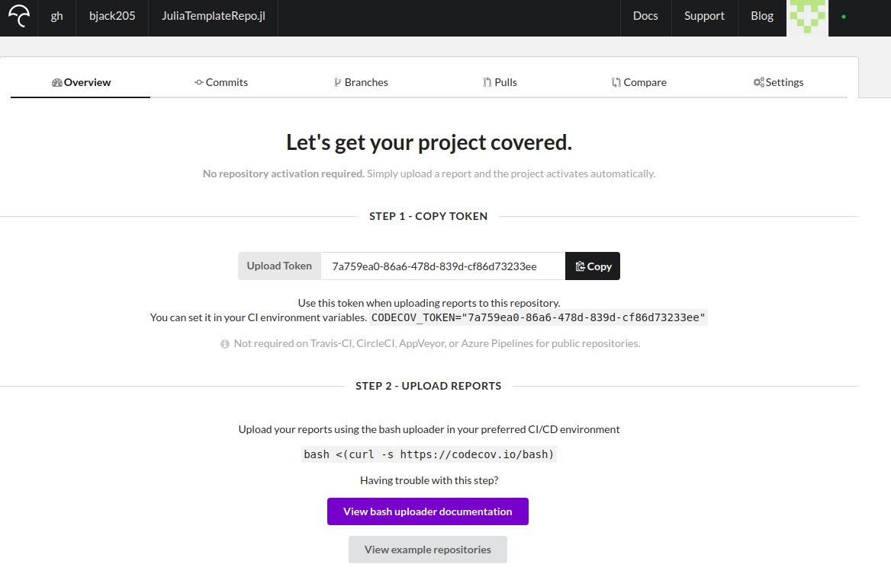
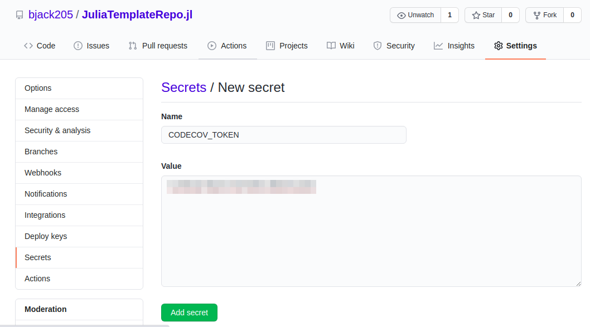

Adding Code Coverage
This section will detail how to get code coverage reports via codecov.io.
Go to codecov.io and log in.
In GitHub, add your repo in the CodeCov App settings.
If you haven't set up codecov for your organization or account, configure it via the GitHub App. 
- In codecov.io, select the parent organization or account and select "Add new repository".
If your repo doesn't show up, you can navigate directly to it in the URL bar, e.g. https://codecov.io/gh/bjack205/JuliaTemplateRepo.jl.
- Copy the codecov token

- Add token to GitHub secrets. In GitHub, navigate to the settings for your repo, select
"Secrets" from the toolbar on the left, and select "New Secret". Name the token CODECOV_TOKEN and copy the token from codecov.io. 